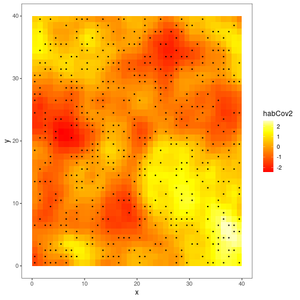
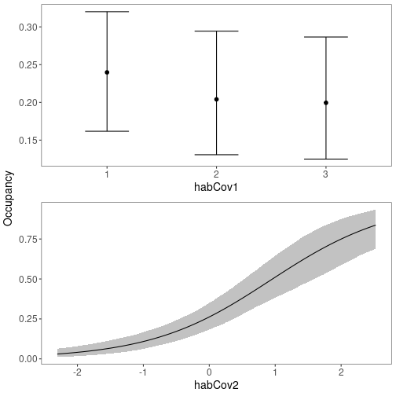
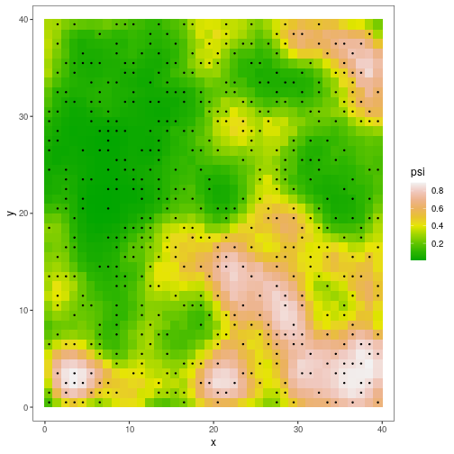

Introduction
In many studies of animal and plant occurrence and abundance, sites may not be entirely independent. For example, sites may be close together, or site size may be smaller than a typical home range. In these cases we expect spatial autocorrelation among nearby sites. Ideally, this autocorrelation would be accounted for in models.
A solution to this problem is so-called spatial occupancy models, which include spatial random effects. A common approach to handling spatial autocorrelation is the use of an intrinsic conditional autoregressive (ICAR) random effect (Banerjee, Carlin, and Gelfand 2014). The growing accessibility of Bayesian approaches has facilitated fitting these models. However, fitting ICAR models is computationally intensive and the ICAR random effect may be correlated with fixed covariates included in the model, making inference difficult (Hodges and Reich 2010). To solve these issues, Johnson et al. (2013) extended restricted spatial regression (RSR) to occupancy models. In an RSR model, the random effect is constructed in such a way that it is uncorrelated with the fixed covariates, and it can be significantly less computationally intensive than ICAR to estimate (Broms et al. 2014). Broms et al. (Broms et al. 2014) provide a nice overview of the concepts. Several recent studies have shown that RSR provides better and faster inference than ICAR (e.g. Broms et al. 2014; Clark and Altwegg 2019). At least two specialized R packages (stocc and Rcppocc) are available for fitting ICAR and RSR occupancy models.
It is now possible to fit RSRs in Stan with ubms as well, allowing those familiar with unmarked/ubms syntax and workflows to easily fit spatial models. Currently all single-season models in ubms are supported. In addition to fitting RSRs, ubms also provides tools for applying and visualizing fitted spatial models. For now these features are available in the dev version of ubms, which you can install with the following code:
Example
We will adapt the demo code and dataset available in R package stocc to fit a spatial occupancy model, which will also facilitate a comparison between stocc and ubms results. The stocc package was an extremely valuable guide when implementing RSRs in ubms, and contains many other useful features related to spatial occupancy modeling.
Format the input data
The sample dataset that comes with stocc is in long format. We need to convert it to the wide format that unmarked and ubms expect.
# Load datasets
data(habData) # site covariate data
data(visitData) # observation cov data
# Visits per site
nobs <- table(visitData$site, visitData$obs)
# Dimensions of y matrix
J <- max(nobs) # max obs per site
M <- nrow(habData) # no. of sites
# Create blank matrices to hold wide-format versions
y <- detCov1 <- detCov2 <- matrix(NA, nrow=M, ncol=J)
# Iterate over sites
for (i in 1:M){
# Data from site i
sub <- visitData[visitData$site==i,]
# Put this data into our wide matrices
subJ <- nrow(sub)
if(subJ == 0) next
y[i,1:subJ] <- sub$obs
detCov1[i,1:subJ] <- sub$detCov1
detCov2[i,1:subJ] <- as.character(sub$detCov2)
}
# Make site and obs cov data frames
site_cov <- habData
obs_cov <- data.frame(detCov1=as.vector(t(detCov1)), detCov2=as.vector(t(detCov2)))
# Convert detCov2 back into a factor (as it was originally)
obs_cov$detCov2 <- factor(obs_cov$detCov2, levels=c("0","1","2","3"))In order to fit a spatial model, we need coordinates included in our site covariates. These should be in some projected coordinate system. In this dataset, coordinates are contained in columns x and y:
head(site_cov)## site x y habCov1 habCov2
## 1 1 0.5 0.5 1 -1.4189386
## 2 2 0.5 1.5 1 -1.4081437
## 3 3 0.5 2.5 1 -1.1183479
## 4 4 0.5 3.5 1 -0.7852142
## 5 5 0.5 4.5 1 -0.6260133
## 6 6 0.5 5.5 1 -0.6122186Site and observation covariates are otherwise handled the same way as normal for unmarked and ubms models. Here’s a quick visualization of how habCov2 varies across the study area.
library(ggplot2)
#Which sites were sampled at least once?
sampled <- apply(y, 1, function(x) any(!is.na(x)))
ggplot(data=site_cov, aes(x=x, y=y)) +
geom_tile(aes(fill=habCov2)) +
geom_point(data=site_cov[sampled,], size=0.5) +
scale_fill_gradientn(colors=heat.colors(10)) +
theme_bw(base_size=12) +
theme(panel.grid=element_blank())
The black dots represent locations that were sampled at least once. Note that not all grid cells with available site covariates were actually sampled; in fact most of them were not. For typical models, ubms would just ignore a site that was present in the dataset but never sampled (i.e., y all NA) since these sites cannot contribute any information. However for spatial models, generating predictive maps across areas that may not have been sampled is a typical goal. To facilitate this, spatial models in ubms do not discard sites which were never sampled but that have available site covariates. As you’d expect, you simply include these by including a row of all missing values in y and your observation covariates, as appropriate. For example, in this dataset, sites 1 and 2 were sampled but site 3 was not:
y[1:3,]## [,1] [,2] [,3] [,4] [,5] [,6] [,7]
## [1,] 1 1 1 1 NA NA NA
## [2,] 1 1 1 NA NA NA NA
## [3,] NA NA NA NA NA NA NA
round(detCov1[1:3,],3)## [,1] [,2] [,3] [,4] [,5] [,6] [,7]
## [1,] 1.474 -0.220 1.112 -1.254 NA NA NA
## [2,] -1.602 1.349 -0.690 NA NA NA NA
## [3,] NA NA NA NA NA NA NAThe final step in data formatting is to construct the unmarkedFrame.
umf <- unmarkedFrameOccu(y=y, siteCovs=site_cov, obsCovs=obs_cov)Choose RSR options
Next, we need to decide on settings for the RSR. Specifically, we need to decide the distance threshold below which two sites will be considered neighbors and thus potentially correlated with each other. For example, if site A and site B are 0.5 distance units apart and we set the threshold at 1, A and B will be considered neighbors. If A and B are 1.5 distance units apart, they will not be neighbors. The distance units are defined by the units of the coordinates you provided.
To visualize this, we can use the RSR() function, which we will use again later when fitting the model. The RSR() function requires as input at least one coordinate vector (typically you will have 2, e.g. x and y) and a value for the threshold argument. If we set the plot_site argument to an integer, RSR will return a map highlighting that site and its neighbors under the current threshold setting:

With threshold=1 and our coordinate grid, site 300 has just 4 neighbors. Now consider threshold=10:

The threshold choice depends on your modeling goals and study system, but it is probably best to start with sites having a relatively small number of neighbors. We will set threshold=1 for this example.
A final argument available in RSR() is moran_cut. This option controls the number of eigenvectors that are used when calculating the spatial random effect (possible values are 1 to the number of sites). Generally, with fewer eigenvectors, the model will run faster and the result will be smoother. Previous studies have shown that inference is not particularly sensitive to this value, and recommended it be set to 10% of the number of sites (Broms et al. 2014; Clark and Altwegg 2019). This is the default in ubms so we will leave it alone.
Fit the model
We are finally ready to fit our spatial model. The formula syntax is identical to normal ubms and (and unmarked) models, except that we will include a call to RSR() with our desired options in our formula for psi. We also include two fixed detection and two fixed occupancy covariates.
#Double formula: first part is for detection, second for occupancy
form <- ~detCov1 + detCov2 ~habCov1 + habCov2 + RSR(x, y, threshold=1)We will then fit the model in Stan with stan_occu(), using 3 parallel cores. This will take Stan a few minutes with default MCMC settings.
fit_ubms <- stan_occu(form, umf, chains=3, cores=3, seed=123)You will likely get some warnings about effective sample size. The solution is to run the model for more iterations, but this is good enough for an example.
Examine results
Look at the parameter estimates:
fit_ubms##
## Call:
## stan_occu(formula = form, data = umf, chains = 3, refresh = 0,
## cores = 3, seed = 123)
##
## Occupancy (logit-scale):
## Estimate SD 2.5% 97.5% n_eff Rhat
## (Intercept) -1.056 0.2236 -1.509 -0.635 1542 1.002
## habCov12 -0.215 0.3128 -0.832 0.384 2339 0.999
## habCov13 -0.261 0.3221 -0.886 0.375 2121 0.999
## habCov2 1.090 0.1705 0.771 1.434 1389 1.001
## RSR [tau] 0.144 0.0529 0.071 0.276 248 1.006
##
## Detection (logit-scale):
## Estimate SD 2.5% 97.5% n_eff Rhat
## (Intercept) 1.736 0.375 1.038 2.532 1806 1.000
## detCov1 0.109 0.214 -0.293 0.510 4609 1.000
## detCov21 1.175 0.544 0.160 2.278 2263 1.000
## detCov22 1.363 0.580 0.246 2.559 2331 1.000
## detCov23 -0.249 0.488 -1.235 0.714 2234 0.999
##
## LOOIC: 668.831
## Runtime: 2.036 minThe precision term (tau, ) associated with the spatial random effect is the final row of the occupancy model estimates. Smaller values of imply greater variability in the spatial random effect.
There also appears to be a strong effect of habCov2 on occupancy. We can quickly visualize marginal effects of fixed covariates with plot_effects.
plot_effects(fit_ubms, "state")
You can extract predicted occupancy values for each site (including sites never actually sampled) using the predict function:
# "state" to get state/occupancy process, as opposed to "det"
psi <- predict(fit_ubms, "state")
head(psi)## Predicted SD 2.5% 97.5%
## 1 0.1431907 0.04554381 0.06928728 0.2453479
## 2 0.2378141 0.08682981 0.10409517 0.4370658
## 3 0.3617458 0.11947600 0.16084996 0.6211602
## 4 0.4577439 0.12923964 0.22673143 0.7246516
## 5 0.4549725 0.12532278 0.22459356 0.7163457
## 6 0.3863041 0.11822055 0.17525150 0.6382941Plotting
It is much more interesting to see how predicted occupancy varies across the study area. ubms has a built-in function for generating such a map, plot_spatial.
plot_spatial(fit_ubms)
The plot also shows the location of sampled sites and whether the species was ever detected at each one.
You can also look at the spatial distribution of random effects :
plot_spatial(fit_ubms, "eta")
Model selection
It is important to confirm that the spatial random effect is actually improving the predictive power of the model; if it isn’t, we ought to remove it. To check this, first fit a similar model without the RSR:
fit_nonspatial <- stan_occu(~detCov1 + detCov2 ~habCov1 + habCov2, umf,
chains=3, seed=123)Combine the models to compare into a fitList (note: they must have the same number of chains and MCMC iterations):
fl <- fitList(fit_ubms, fit_nonspatial)Then, compare the spatial and non-spatial models with leave-one-out cross-validation (LOO)(Vehtari, Gelman, and Gabry 2017) using the modSel() function:
## elpd nparam elpd_diff se_diff
## fit_ubms -334.42 46.18 0.00 0.00
## fit_nonspatial -380.45 8.34 -46.04 8.25A measure of predictive accuracy (elpd) is shown for each model, and the model with the highest predictive accuracy is listed first. The difference in elpd between the top and model and each subsequent model (elpd_diff), along with a measure of the uncertainty of that difference (se_diff), are also shown. If the magnitude of elpd_diff is large relative to the associated uncertainty, we can conclude that there is a difference in predictive power between the two models. In this case elpd_diff between the spatial (fit_ubms) and non-spatial (fit_nonspatial) models is several times the size of se_diff, so including the spatial random effect appears to improve model predictive accuracy.
Compare with stocc
The implementation of spatial models in ubms owes much to the stocc package. The two packages give essentially identical results. To show this, we will fit the same model in stocc and compare the occupancy predictions with ubms. The code for fitting the model in stocc is taken directly from the package demo.
set.seed(123)
names <- list(
visit=list(site="site",obs="obs"),
site=list(site="site", coords=c("x","y"))
)
fit_stocc <- spatial.occupancy(
detection.model = ~ detCov1 + detCov2,
occupancy.model = ~ habCov1 + habCov2,
spatial.model = list(model="rsr", threshold=1.01, moran.cut=0.1*nrow(habData)),
so.data = make.so.data(visitData, habData, names),
prior = list(a.tau=0.5, b.tau=0.00005, Q.b=0.1, Q.g=0.1),
control = list(burnin=1000/5, iter=4000/5, thin=5)
)Here’s a similar plot of predicted occupancy across the study area:
# Predicted occupancy
psi_stocc <- fit_stocc$occupancy.df$psi.est
# Sites that were sampled at least once
sampled <- apply(getY(umf), 1, function(x) any(!is.na(x)))
plot_data <- cbind(habData, psi=psi_stocc)
ggplot(data=plot_data, aes(x=x,y=y)) +
geom_point(aes(col=psi), size=5, pch=15) +
scale_color_gradientn(colors=terrain.colors(10)) +
geom_point(data=plot_data[sampled,],aes(x=x,y=y), size=0.5) +
labs(col="psi") +
theme_bw(base_size=12) +
theme(panel.grid=element_blank(),
strip.background=element_rect("white"))
As you can see, the predicted occupancy maps for ubms and stocc are almost identical. Note, however, that coefficient estimates may not be identical because stocc uses a probit link function, while ubms uses a logit link.
References
Banerjee, Sudipto, Bradley P Carlin, and Alan E Gelfand. 2014. Hierarchical Modeling and Analysis for Spatial Data. CRC press.
Broms, Kristin M., Devin S. Johnson, Res Altwegg, and Loveday L. Conquest. 2014. “Spatial Occupancy Models Applied to Atlas Data Show Southern Ground Hornbills Strongly Depend on Protected Areas.” Ecological Applications 24 (2): 363–74. https://doi.org/10.1890/12-2151.1.
Clark, Allan E., and Res Altwegg. 2019. “Efficient Bayesian Analysis of Occupancy Models with Logit Link Functions.” Ecology and Evolution 9 (2): 756–68. https://doi.org/10.1002/ece3.4850.
Hodges, James S, and Brian J Reich. 2010. “Adding Spatially-Correlated Errors Can Mess up the Fixed Effect You Love.” The American Statistician 64 (4): 325–34.
Johnson, Devin S., Paul B. Conn, Mevin B. Hooten, Justina C. Ray, and Bruce A. Pond. 2013. “Spatial Occupancy Models for Large Data Sets.” Ecology 94 (4): 801–8. https://doi.org/10.1890/12-0564.1.
Vehtari, Aki, Andrew Gelman, and Jonah Gabry. 2017. “Practical Bayesian Model Evaluation Using Leave-One-Out Cross-Validation and WAIC.” Statistics and Computing 27 (5): 1413–32. https://doi.org/10.1007/s11222-016-9696-4.